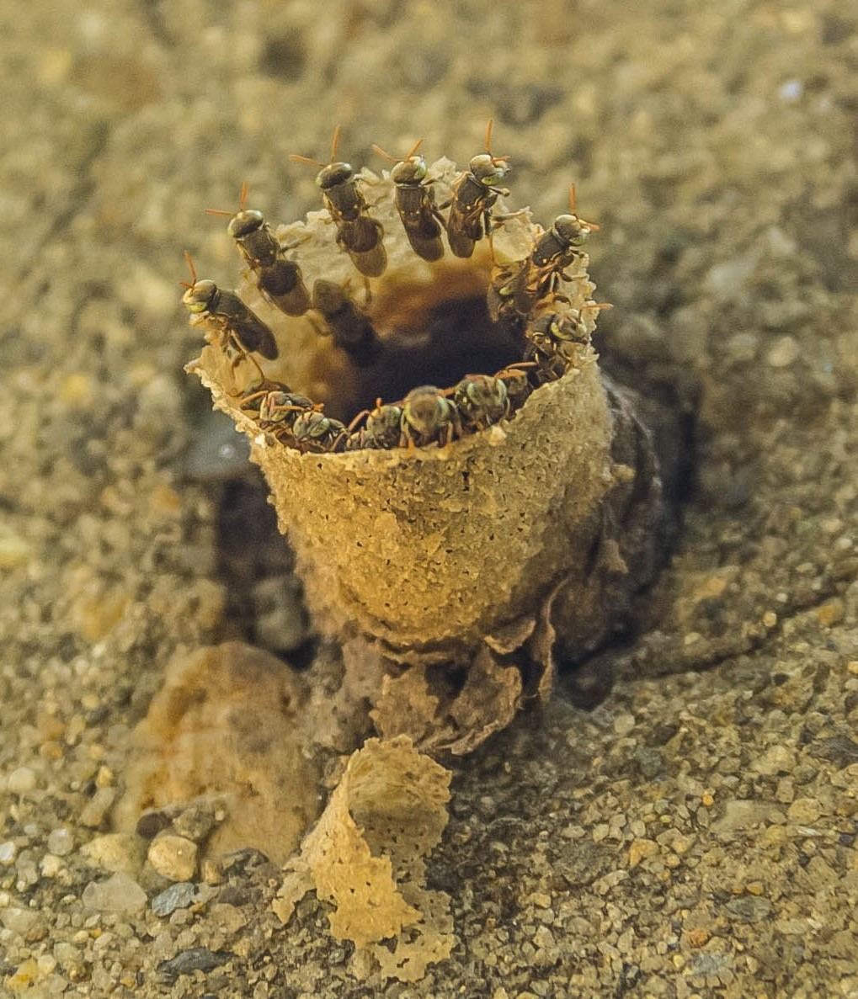
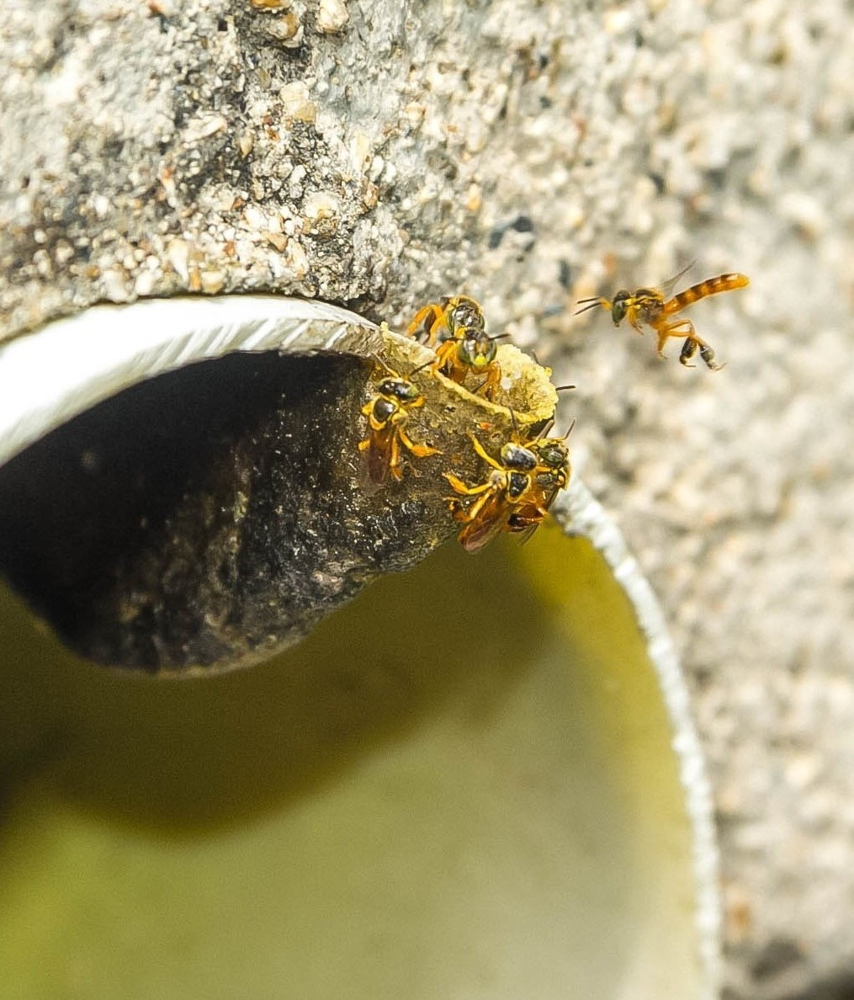
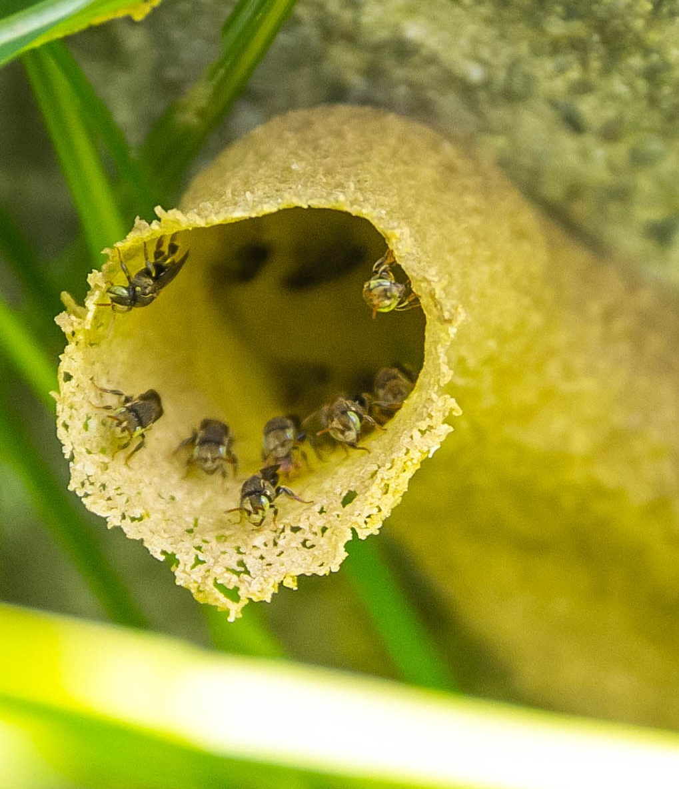
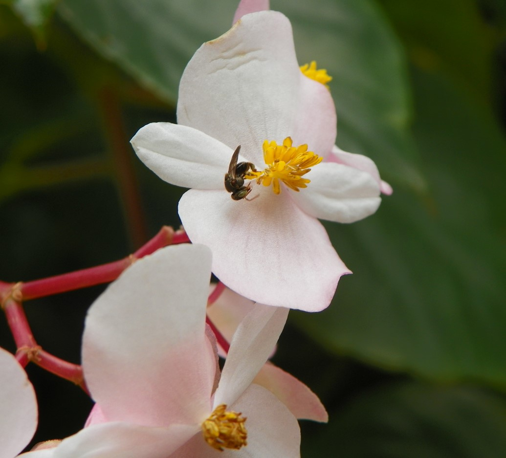
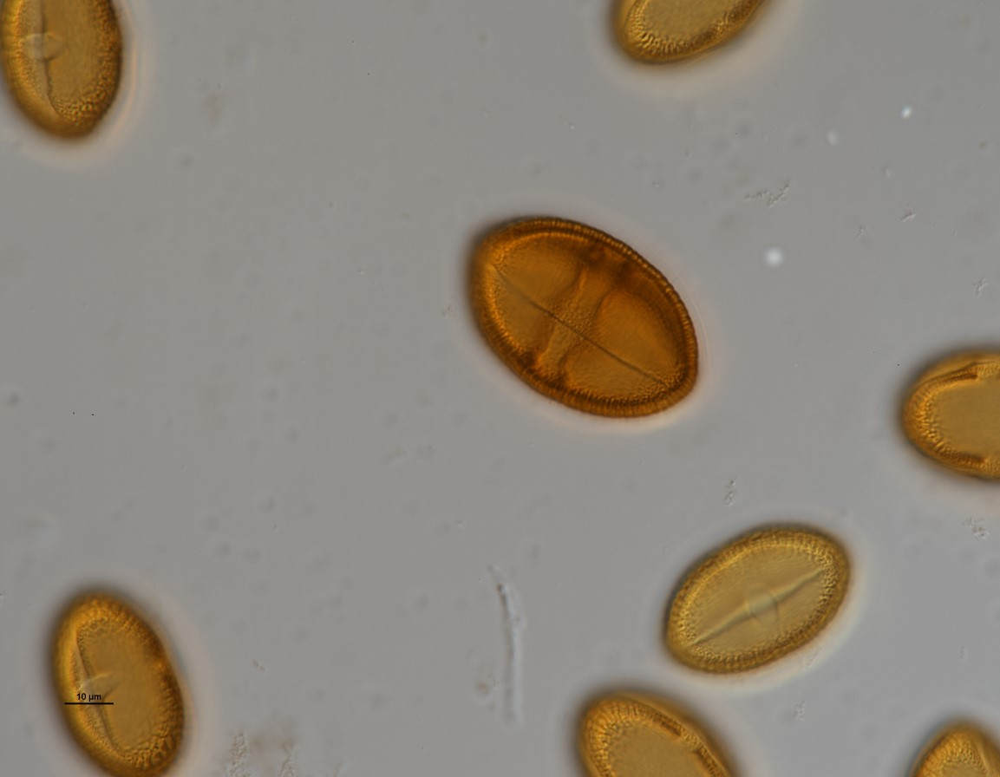
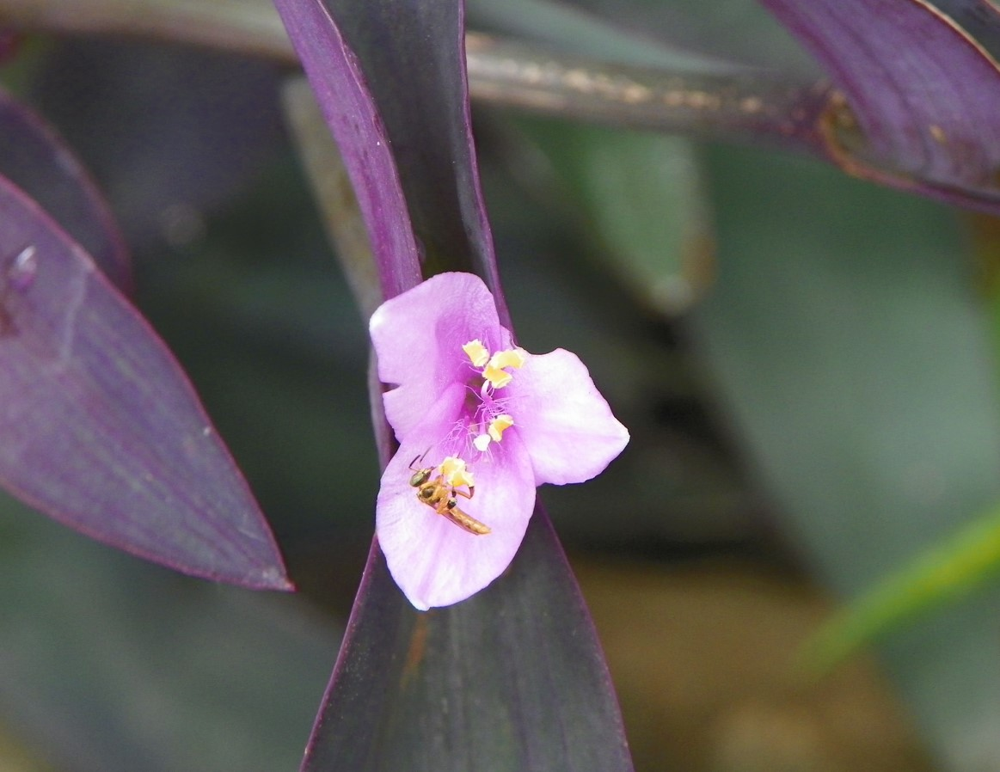
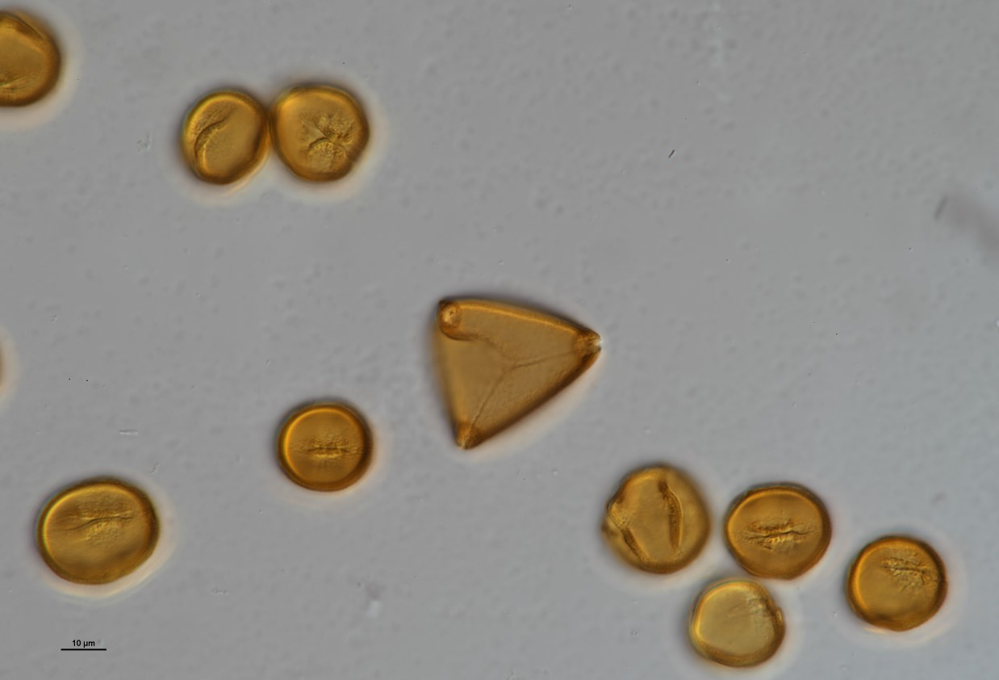
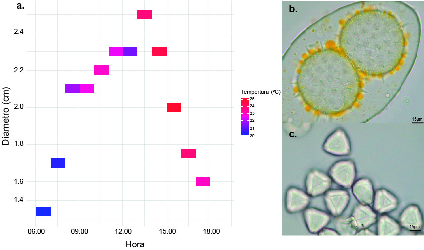
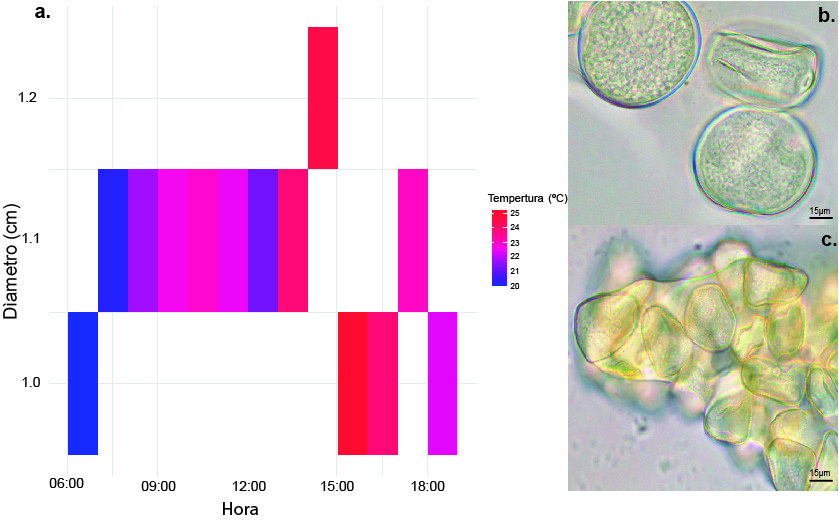

Descubre la importancia de las abejas sin aguijón y su rol en la biodiversidad urbana de Medellín
¿Quienes somos?
Urban Bee es un colectivo familiar de Medellín, surgido del amor y la pasión de la familia Castañeda Riascos por las abejas. Nuestro objetivo es conocer su ecología, su distribución en la ciudad y la dieta de las abejas sociales sin aguijón. Impulsados por este interés,
iniciamos inventarios en distintos puntos de Medellín, comenzando con nuestro primer registro en el campus de la Universidad Nacional. Posteriormente, expandimos el estudio a la Comuna 8 y 10 ,en barrios como Villa Hermosa, Prado Centro y así como el municipio de Sabaneta y Panamá.
Actualmente, nuestro enfoque está en comprender la abundancia y distribución de estas abejas, no solo en nuestro barrio, sino en toda el área de Medellín y, a futuro, en el Valle de Aburrá. Este proyecto busca identificar patrones de nidificación, tipos de sustrato y
otros factores que influyen en la dinámica de sus poblaciones en entornos urbanos. Además, llevamos a cabo un monitoreo continuo del polen recolectado por Nannotrigona mellaria y (Smith, 1862) y Tetragonisca angustula (Latreille, 1811) en nuestra sede
en Villa Hermosa (6.259584° N; -75.549527° W). Paralelamente, promovemos la educación ciudadana y exploramos alternativas para aumentar la disponibilidad de recursos florales en la ciudad, contribuyendo así al fortalecimiento de las poblaciones de abejas urbanas. Puedes contribuir enviándonos información sobre
los avistamientos en tu barrio. Escríbenos a nuestro correo con los detalles del avistamiento, incluyendo coordenadas geográficas, fotos y el tipo de sustrato donde se encontró la colonia.
Esta información será almacenada y representada en un mapa para identificar patrones de nidificación.
¡Tu colaboroción es fundamental para nosotros! Cada avistamiento y cada aporte contribuyen al conocimiento y conservación de estos polinizadores esenciales.
Abejas Sociales en el Área Urbana de Medellín
En la zona urbana de Medellín habitan diversas especies de abejas, pero en esta página nos enfocaremos en aquellas abejas sociales sin aguijón que nidifican en distintos lugares como postes, grietas en paredes, suelos de concreto, baldosas y cavidades en muros.
Entre ellas destacan Nannotrigona mellaria (Smith, 1862) y Tetragonisca angustula (Latreille, 1811), ambas pertenecientes al orden Himenóptera, superfamilia Apoidea y tribu Meliponini. Su origen es América Tropical (Neotrópico) y, como abejas eusociales,
presentan una organización en castas compuesta por reinas, obreras y machos.
En cuanto a su nidificación, Tetragonisca angustula (Nates-Parra et al., 2021) se caracteriza por mantener abejas guardianas en la entrada del tubo de acceso a la colmena, donde defienden activamente su nido. Aunque no cierran completamente el tubo, pueden reducir la entrada
con cera si existe un riesgo persistente. Su estrategia de defensa es activa, atacando a intrusos y emitiendo señales de alarma para alertar a la colonia.Por otro lado, Nannotrigona mellaria (Silva, 2019) presenta un comportamiento diferente, ya que es capaz de cerrar
completamente el tubo de entrada ante amenazas o durante la noche. Además, su tubo puede cambiar de diámetro y extenderse hasta 21 cm de largo, lo que le permite regular su acceso según las condiciones externas. Las abejas guardianas de esta especie suelen permanecer en el borde interno del tubo y,
al detectar la presencia de un intruso, se esconden rápidamente para evitar ser vistas.

Abejas Urbanas de Medellín -Nannotrigona mellaria

Abejas Urbanas de Medellín -Tetragonisca angustula

Abejas Urbanas de Medellín -Nannotrigona mellariaAbejas Urbanas de Medellín -Tetragonisca angustula
Dieta
En las abejas Meliponini, aún no está completamente definido si a lo largo de su ciclo de vida desempeñan tareas de manera secuencial o si existe una superposición de funciones dentro de la colonia, lo cual puede variar según la especie. Las obreras jóvenes inician sus actividades dentro del
nido realizando tareas como el acicalamiento, la limpieza de celdas y la eliminación de desechos. Posteriormente, pasan a manipular cerumen y resinas, atender los potes de almacenamiento de alimento y acompañar a la reina durante la oviposición. A medida que maduran, asumen roles fuera del nido,
como el forrajeo de néctar, polen y agua, además de la vigilancia de la colonia (Nates-Parra et al., 2021).
La dieta de estas abejas se basa en recursos esenciales como el polen, que les proporciona proteínas, y el néctar, su principal fuente de carbohidratos, ambos fundamentales para la salud y continuidad de la colonia. Diversas familias botánicas, como Euphorbiaceae, Myrtaceae, Arecaceae, Anacardiaceae,
Urticaceae, Sapindaceae y Rutaceae, son fuente de alimento para ellas. Además, el género Nannotrigona se distingue por su capacidad de realizar polinización por zumbido en anteras poricidas, como ocurre en las familias Melastomataceae y Solanaceae. Esta última es de gran importancia económica para el ser humano,
ya que incluye cultivos como tomate (Solanum lycopersicum), lulo (Solanum quitoense)y chile habanero (Capsicum chinense) (Silva, 2019).

Nannotrigona mellaria colectando polen en flor de Begonia minor.

Granos de polen de colectados por Nannotrigona mellaria

Tetragonisca anustula colectando polen en flor de Tradescantia zebrina.

Granos de polen colectados por las Tetragonisca angustula
Monitoreo de Colonias Urbanas y Recursos Florales
En este apartado se presentan las mediciones del tubo de entrada realizadas a dos colonias de Nannotrigona mellaria y Tetragonisca angustula durante un día. Se registraron variables como temperatura, humedad, hora y diámetro del tubo, además de recolectar muestras de cargas corbiculares de ambas especies,
asegurando que ninguna abeja fuera sacrificada en el proceso.
Las gráficas fueron generadas con el lenguaje de programación R, mientras que las imágenes de los granos de polen, sin procesamiento químico (sin acetólisis), se capturaron con un microscopio Leica DM500 a 100x, utilizando la cámara ICC50 W.

(a)Mapa de calor que representa la variación del diámetro del tubo de entrada en un nido de Nannotrigona mellaria a lo largo del día, junto con los tipos de granos de polen transportados : (b) Malvaceae, (c) Myrtaceae.

(a)Mapa de calor que representa la variación del diámetro del tubo de entrada en un nido de Tetragonisca angustula a lo largo del día, junto con los tipos de granos de polen transportados: (b) Poaceae, (c) Cyperaceae.
Mapa de Distribución
El mapa muestra la distribución de colonias urbanas de diferentes especies de abejas sociales sin aguijón en el Valle de Aburrá y otras áreas fuera de esta región. En él se pueden visualizar los sitios de avistamiento donde se han identificado colonias,
destacando Tetragonisca angustula en amarillo, Nannotrigona mellaria en azul, y Scaptotrigona cf. limae en rojo.
Recursos Bibliográficos
Compartimos recursos bibliográficos para que los usuarios aprendan más sobre las abejas, incluyendo cómo diferenciarlas de otros insectos e identificar sus sitios de nidificación. Además, proporcionamos un resumen de diversos
conteos melisopalinológicos realizados en distintas zonas de la región Andina y el Caribe. También ponemos a disposición un catálogo polínico de los Andes Colombianos, una herramienta fundamental para identificar los granos de polen visitados por las abejas y otros vectores de polinización.
Jaramillo Silva, J. C. (2019). Taxonomy, phylogeny and geographical distribution of Nannotrigona (Hymenoptera: Apidae: Meliponini) in Colombia (Tesis de maestría). Universidad Nacional de Colombia, Facultad de Ciencias, Departamento de Biología, Bogotá, Colombia.
Nates-Parra, G., & Brochero, H. L. (Eds.). (2021). La abeja angelita, Tetragonisca angustula (Latreille, 1811) (Hymenoptera: Apidae: Meliponini): Biología, ecología, genética y potencial mercado de su miel en Colombia. Centro Editorial Facultad de Ciencias Agrarias, Universidad Nacional de Colombia, Sede Bogotá.
Contacto
Si tienes preguntas sobre las abejas urbanas, no dudes en contactarnos a través de WhatsApp o por correo electrónico: marcecr2008@gmail.com.
Quiénes Somos
Ivonne Marcela Castañeda Riascos - Ingeniera Agrónoma, MSc en Geomorfología y suelos (Palinóloga).